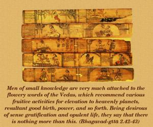
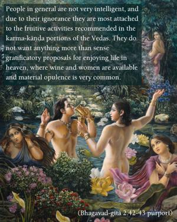
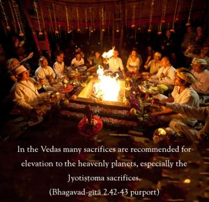
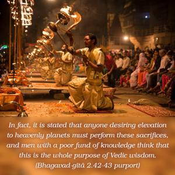
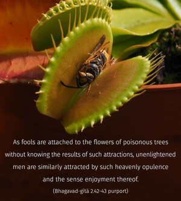

Men of small knowledge are very much attached to the flowery words of the Vedas, which recommend various fruitive activities for elevation to heavenly planets, resultant good birth, power, and so forth. Being desirous of sense gratification and opulent life, they say that there is nothing more than this.





People in general are not very intelligent, and due to their ignorance they are most attached to the fruitive activities recommended in the karma-kāṇḍa portions of the Vedas. They do not want anything more than sense gratificatory proposals for enjoying life in heaven, where wine and women are available and material opulence is very common. In the Vedas many sacrifices are recommended for elevation to the heavenly planets, especially the Jyotiṣṭoma sacrifices. In fact, it is stated that anyone desiring elevation to heavenly planets must perform these sacrifices, and men with a poor fund of knowledge think that this is the whole purpose of Vedic wisdom. It is very difficult for such inexperienced persons to be situated in the determined action of Kṛṣṇa consciousness. As fools are attached to the flowers of poisonous trees without knowing the results of such attractions, unenlightened men are similarly attracted by such heavenly opulence and the sense enjoyment thereof.
In the karma-kāṇḍa section of the Vedas it is said, apāma somam amṛtā abhūma and akṣayyaṁ ha vai cāturmāsya-yājinaḥ sukṛtaṁ bhavati. In other words, those who perform the four-month penances become eligible to drink the soma-rasa beverages to become immortal and happy forever. Even on this earth some are very eager to have soma-rasa to become strong and fit to enjoy sense gratifications. Such persons have no faith in liberation from material bondage, and they are very much attached to the pompous ceremonies of Vedic sacrifices. They are generally sensual, and they do not want anything other than the heavenly pleasures of life. It is understood that there are gardens called Nandana-kānana in which there is good opportunity for association with angelic, beautiful women and having a profuse supply of soma-rasa wine. Such bodily happiness is certainly sensual; therefore there are those who are purely attached to such material, temporary happiness, as lords of the material world.